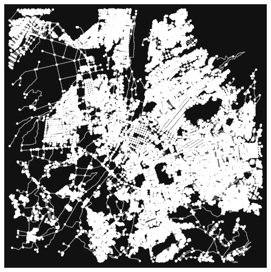

En el presente artículo presentamos la información recopilada, metodología de procesamiento y resultados finales del proyecto de Visualización de la data de tráfico presentada en Arequipa, con información extraída desde la API Distance Matrix de Google
12 de Julio de 2021
Recolección de datos
En un notebook utilizamos la librería OSMNX para generar los puntos que formarán parte del grafo de estudio dentro de la ciudad de Arequipa
import osmnx as ox
%matplotlib inline
G = ox.graph_from_address('Arequipa', network_type='drive', simplify=True,dist=7000)
Gg = ox.utils_graph.get_largest_component(G, strongly=True)
ox.plot_graph(Gg)
Donde definimos el grafo desde la ubicación del centro de Arequipa, con una red de tráfico vehicular (network_type='drive'), con conexiones simplificadas y 7 kilómetros a la redonda. El grafo generado se visualiza de la siguiente forma:
Este grafo cubre prácticamente toda la ciudad desde Ciudad Municipal en Cerro Colorado hasta Characato, y desde Congata en Uchumayo hasta las faldas del Misti. Ya que no se cubrirán todos los nodos presentes en este grafo sino sólo los que cubran las rutas principales. Estas rutas se determinan dede las coordenadas del centro del grafo, las cuales se obtienen con los bordes del objeto de OSMNX:
nodes = ox.graph_to_gdfs(Gg, edges=False)
limites = nodes['geometry'].total_bounds
centerx = (limites[0]+limites[2])/2
centery = (limites[1]+limites[3])/2
print( str(centerx) + "," + str(centery) )
Se decidió generar 50 rutas con 3 radios concéntricos determinados también desde los límites del grafo. Por cada radio se generan 50 paraes de nodos extremos determinados por un aumento de ángulo constante de 3.6 grados. Para evitar que los nodos se superpongan entre zonas concéntricas, para cada radio se genera un descentramiento de +1.5 grados con respecto al círculo más externo. Con estos datos se generan nuevas coordenadas que son enviadas al grafo para obtener los nodos más cercanos a cada coordenada ya dada. Se obtiene una lista de 50 pares nodos extremos que producirán las rutas dentro de la ciudad. El codigo de la parte inferior muestra la configuración para el círculo más interno
radioy = abs(limites[1]-limites[3])/2
radio = max(radiox,radioy)-0.04
x = []
y = []
for i in range(100):
dxx = math.cos(i*3.6*math.pi/180+3*math.pi/180)*radio
dyy = math.sin(i*3.6*math.pi/180+3*math.pi/180)*radio
x.append(centerx+dxx)
y.append(centery+dyy)
id = ox.distance.nearest_nodes(Gg,x,y)